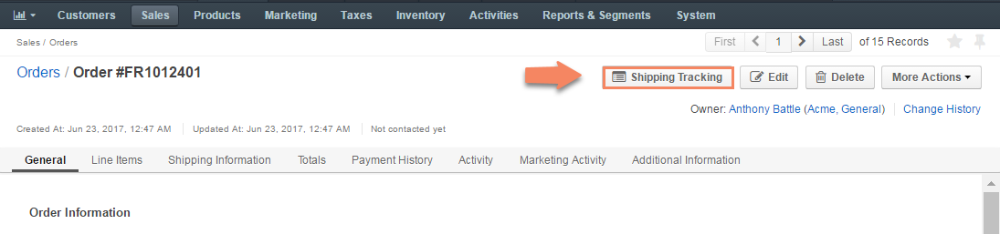
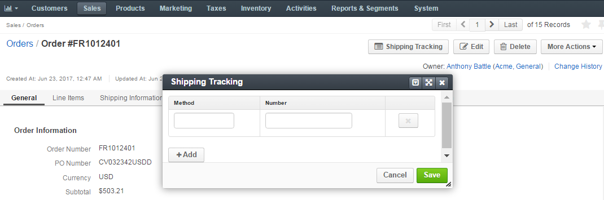
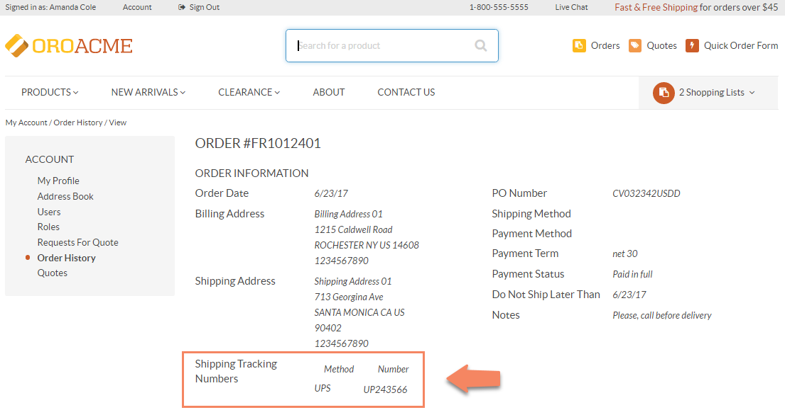

Shipping¶
Shipping Overview¶
To facilitate global B2B sales, OroCommerce administrator enables valid shipping methods for particular locations and integrates local shipping providers or the best shipping plans whenever it is possible.
When submitting an order, a customer may have several shipping options to choose from. They depend on the shipping address that is collected at the checkout. Once the address is provided, OroCommerce evaluates shipping methods against the special shipping rules and exposes only the options recommended for the particular location and/or based on other order details. After the customer user has selected the shipping method, the shipping cost is shown in the order next to the subtotal.
During the order delivery, a sales person can add one or more pairs of shipping tracking method and number to help the customer track the delivery status.
In a quote, a sales person may enter the order shipping address and select one of the available shipping methods on behalf of the user to calculate the shipping cost for the order.
Supported shipping providers:
- UPS
- DPD
- Flat rate
When using UPS, cost evaluation is possible only for the products with available shipping information (weight and weight unit).
System Configuration for Shipping¶
You can control the following options on the system configuration level. Click on the link to get to the detailed configuration instructions.
- In the Shipping Origin, set the default shipping origin address.
- In the Shipping Options, enable and disable the shipping units of length and weight and the freight class.
- In the Shipping Tax, label the taxes that apply to the shipping cost.
Integration with Shipping Providers¶
You may configure integration with third-party providers to offer their shipping services for the quotes and orders placed using OroCommerce.
Out of the box, you may integrate OroCommerce with UPS, DPD, and Flat Rate shipping.
See the Integration with Shipping Providers topic for more information.
Shipping Rules Configuration¶
You can configure one or more shipping rules that enable the shipping methods for the provided destinations and set the customized shipping service price by adding a surcharge per service option or globally for all options of the service provider.
See the Shipping Rules Configuration topic for more information, including:
Shipping Information About the Product¶
To enable shipping cost estimation by an integrated system, like UPS, every product in the order or quote should have the shipping information. This information combined with the shipping origin and destination address helps integrated system calculate shipping cost with the acceptable accuracy.
Sample shipping information in the product details:

It is recommended to add shipping information for every product unit.
Shipping Tracking Details in the Order¶
When a customer user submits an order, they provide the shipping address and, optionally, the Do Not Ship Later Than date. Based on this information and their selected shipping method, they may see the shipping cost estimate. After a sales person adds the shipping service and their tracking number to the order, customer user can track the delivery (if this option is provided by the shipping company).
To add a tracking information about the shipping to the order, in Management Console:
Navigate to Sales > Orders using the main menu.
Click on the necessary order to view its details.
Click Shipping Tracking.

Enter the shipping method (e.g. UPS), and the tracking number.
Some orders may be delivered in multiple portions due to the circumstances related to the delivery time or delivered volume.
To provide tracking details for additional shipping, click + Add and enter the method and tracking number.
Click Save.
After the tracking information for shipping has been provided, it becomes available to the buyer on the front store.
Shipping Management in the Quote¶
When editing the quote, a sales person may limit the shipping methods visible to customer.
To limit the shipping methods per quote:
Navigate to Sales > Quotes in the main menu.
Hover over the More Options menu to the right of the necessary quote and click to start editing its details.
In the Shipping Information section, configure the shipping options available for the customer:

In the Shipping Methods list, tick the boxes next to the shipping methods that you would like the customer to use for this order delivery.
Note
When none of the methods are selected, the customer can use any of the listed methods.
Note
Once you change the existing settings, the previous configuration will be saved for your information in the Previously Selected Shipping Method log above the list of the shipping methods.
If necessary, select the preferred shipping method from the Default Shipping Method list. The customer will be able to change the option to any other available shipping method.
Optionally, enter the Overridden Shipping Cost Amount, USD - a custom shipping cost that will be used instead of the one dynamically generated based on the shipping method selection.
To enforce using only the default Shipping method, enable Shipping Method Locked flag.
Tick the Allow Unlisted Shipping Methods box to allow using the shipping method that is already selected as a default one, even if it is disabled in this quote configuration.